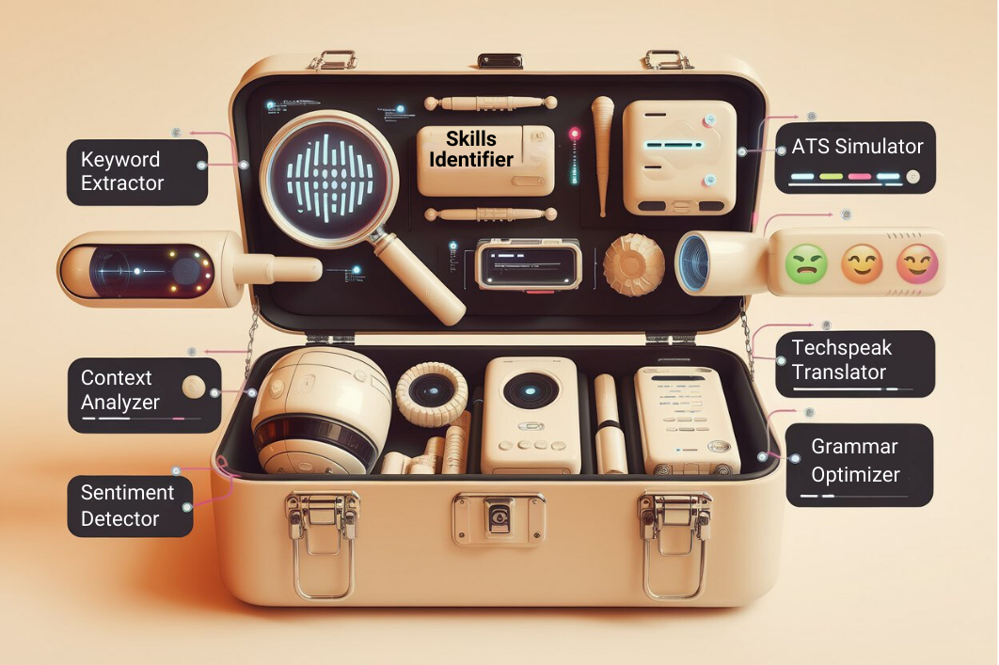
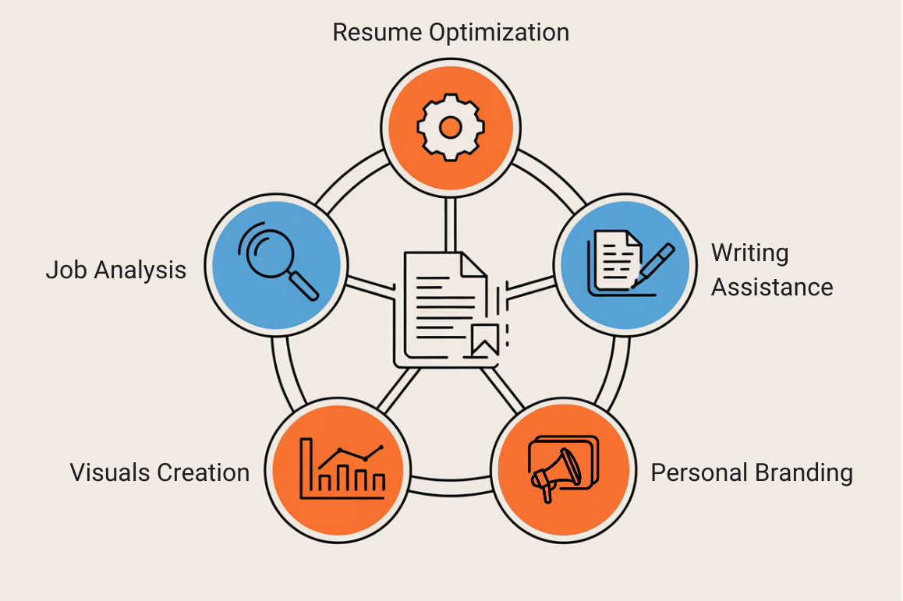

Welcome back, friends. Now that we've demystified the AI behind resume screening, it's time to equip you with digital lightsabers for conquering the job market. In this chapter, we're diving into the AI-powered tools that will transform your resume from a humble text file into a job-attracting tractor beam.
First up in our AI arsenal are the job description analysis tools. These are your personal codebreakers for the often cryptic language of job postings.
How it works: This clever little AI is your truffle pig for keywords. It sniffs through job descriptions, rooting out the most critical terms and phrases. Then, it plays "match game" with your resume, giving you a compatibility score that would make even the pickiest dating app jealous.
STEM-specific superpower: It's particularly adept at identifying the tech stack and tools that make hiring managers weak in the knees. Whether it's spotting the difference between Python (the language) and python (the snake), or recognizing that "ML" stands for Machine Learning and not Major League, this tool has your back.
How it works: This AI is that brutally honest friend who tells you when you've got spinach in your career teeth. It analyzes job descriptions and your resume, then points out any missing skills or experiences with all the subtlety of a neon sign.
STEM-specific superpower: In the ever-evolving tech world, this tool is also your early warning system for emerging technologies and methodologies, like having a time machine that tells you what skills you'll need in the future.
Next up, we have the Swiss Army knives of resume tools. These platforms offer a buffet of AI-powered features to turn your resume into a lean, mean, job-getting machine.
How it works: This tool is a universal translator for your resume, ensuring it speaks fluent ATS. It simulates how various Applicant Tracking Systems will parse your resume, flagging any formatting faux pas or sections that might as well be written in Klingon for all the ATS cares.
STEM-specific superpower: It's particularly good at ensuring your complex technical projects and that revolutionary algorithm you developed don't get lost in translation.
How it works: This AI is a career coach, writing tutor, and industry expert all rolled into one. It analyzes your resume content and offers suggestions based on successful resumes in your field. It's like crowd-sourcing career advice, but without the awkward networking events.
STEM-specific superpower: It excels at helping you translate your technical achievements into language that will make both robots and humans swoon.
Now, let's polish that prose until it shines brighter than a newly unboxed iPhone!
How it works: This AI is a tiny English professor living in your computer. It checks your grammar, spelling, and style, offering suggestions that would make even your high school English teacher proud.
STEM-specific superpower: It helps you present complex technical concepts with the clarity of well-documented code and the eloquence of a TED talk.
How it works: This tool helps you adapt your language to the specific tone and style of your target industry. It's like having a local guide for the linguistic landscape of your desired job.
STEM-specific superpower: It excels at helping you strike that perfect balance between "tech guru" and "team player" in your writing.
For those times when words alone just won't cut it, let's add some visual pizzazz to your resume. This is definitely role- and industry-specific, and should never replace your conventional resume formatting; but sometimes visuals are the sugar on top.
How it works: This tool is like having a graphic designer and a data scientist as your personal resume stylists. It takes your content and transforms it into a visual feast that's still ATS-friendly.
STEM-specific superpower: It's particularly useful for roles where data visualization is key, like data science or UX/UI design. Show off those statistics and project outcomes in living color!
Last but not least, let's ensure your personal brand is as cohesive as Apple's product line and as recognizable as Elon Musk's Twitter feed.
How it works: This AI is a personal PR team for your professional life. It analyzes your LinkedIn profile and suggests improvements, ensuring your online presence is as polished as your resume.
STEM-specific superpower: It's great at helping you showcase your technical projects and publications in a way that will make recruiters and fellow tech enthusiasts alike sit up and take notice.
How it works: This AI is a web developer, designer, and content strategist. It takes your resume content and creates a personal website that's more impressive than most startups' homepages.
STEM-specific superpower: It's excellent for creating project portfolios or research showcases. Finally, a place to show off that machine learning model you built that can predict which Hogwarts house a person belongs to based on their code comments.
And there you have it, future tech superstars! With these AI tools in your arsenal, you're ready to craft a resume for both robots and humans. Remember, these tools are here to amplify your awesome, not replace it. Your unique experiences, skills, and that project you stayed up for 48 hours straight to finish - that's what really makes your resume shine.
In our next chapter, we'll walk through a step-by-step process of using these tools to create a resume that's so good, it would make ChatGPT jealous. Stay tuned, and may the odds (and the algorithms) be ever in your favor.
Now that you're familiar with the essential AI tools for resume tailoring, take the next step by trying out one of the tools mentioned. Start with Jobscan for job description analysis or use VMock to optimize your resume's content. Visit our website for a complete list of resources to help you get started on AI-powered resume optimization.